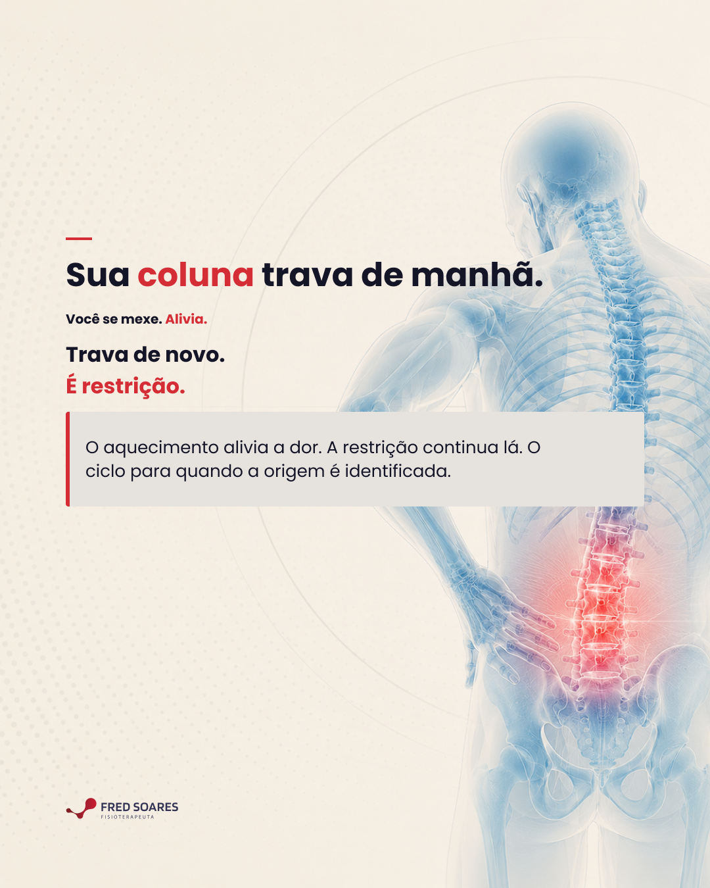
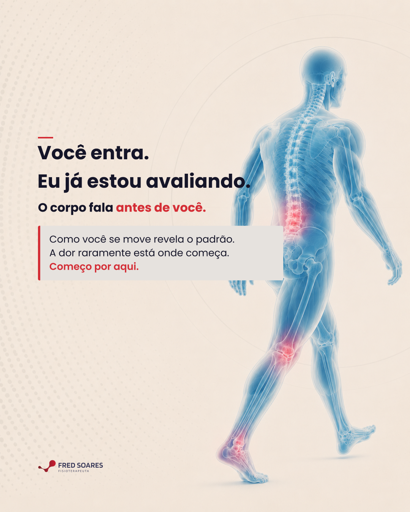
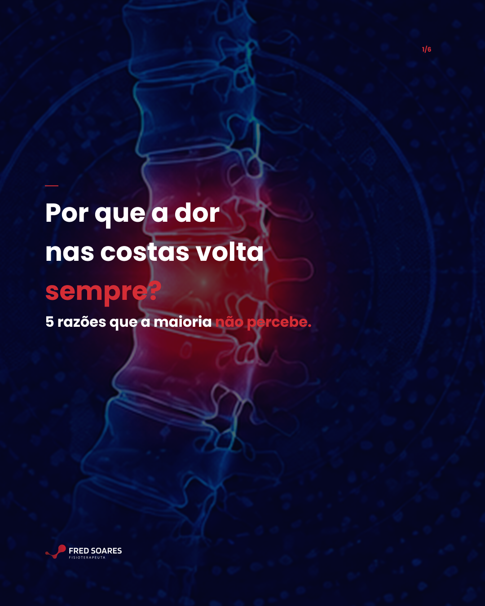
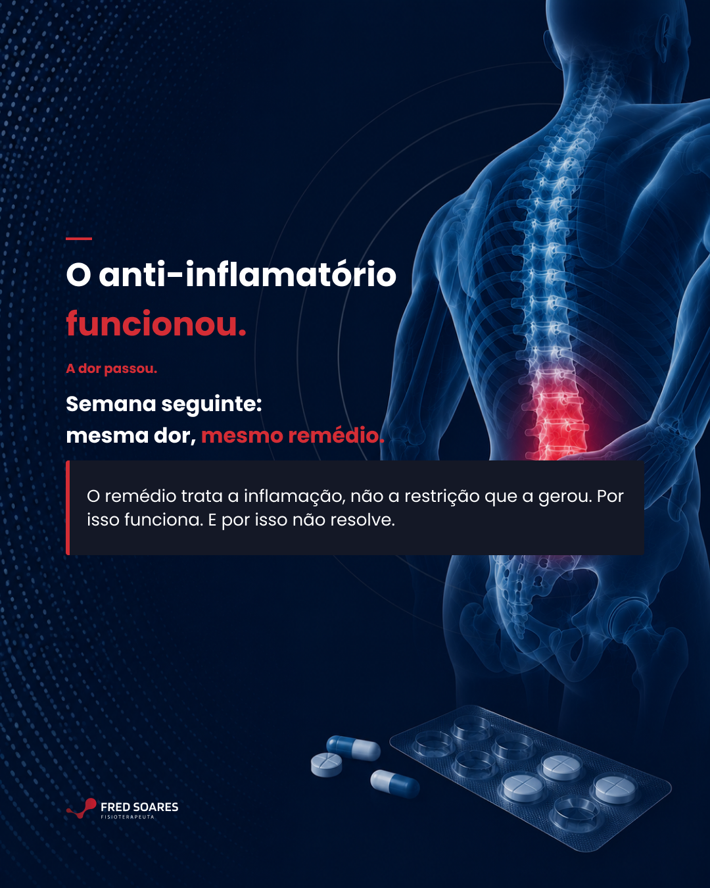
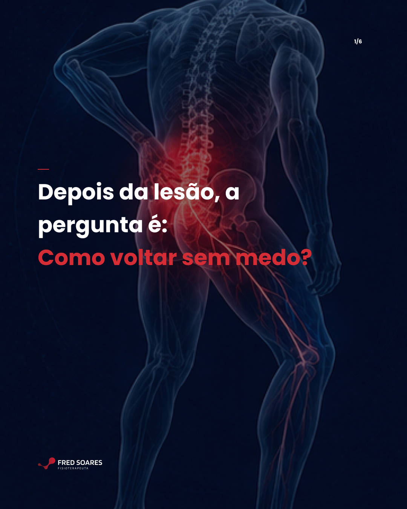

Calendário Editorial · Instagram · Agosto 2026
Mês 3
Dr. Fred
Soares
Osteopata · Especialista em coluna
Intermares, Cabedelo
Apresentação por Arrive In Digital

Osteopata · Especialista em coluna
Intermares, Cabedelo
Apresentação por Arrive In Digital



6 slides

6 slidesGrade 3×3 · 8 publicações em ordem de postagem. Clique em qualquer imagem para ampliar.
Hooks virais verificados em mercado. Posicionamento inalterado.
Promessa central
"destravar a coluna. tratar a causa. 4–5 sessões. resolvido."
Filtre por formato. Clique em "Ver brief" para ver frase, legenda e instruções de design.
| Tempo | Bloco | Fala |
|---|---|---|
| 0–4s | Gancho | Você sente uma dor que começa na lombar, desce pela nádega, vai pela coxa — às vezes até o pé. A dor está na perna. A origem está na coluna. |
| 4–18s | Mecanismo | O nervo ciático é o nervo mais longo do corpo. Sai da lombar, passa pela nádega, desce pela coxa até o pé. Quando algo comprime ou irrita ele em qualquer ponto do trajeto — o sinal viaja pelo nervo inteiro. Por isso você sente na perna uma dor que começa na coluna. |
| 18–38s | Disrupção | O erro mais comum que eu vejo: tratar onde dói. A coxa doi — trata a coxa. A panturrilha formiga — trata a panturrilha. O sintoma diminui um pouco. A causa continua. A dor volta em duas semanas. |
| 38–53s | Diferencial | Na avaliação, o que importa é encontrar onde o nervo está sendo irritado — pode ser na lombar, na bacia, no piriforme, em mais de um ponto. Uma vez identificada a origem, o tratamento vai direto nela. Em média 4 a 5 sessões. Resolvido. |
| 53–65s | CTA | Está com dor que desce pela perna faz tempo? Não trata o sintoma antes de identificar a origem. Estou em Intermares, Cabedelo. Manda mensagem. |
| # | Slide | Copy |
|---|---|---|
| 1 | Capa | Por que a dor nas costas volta sempre? · 5 razões que a maioria não percebe. |
| 2 | Razão 1 | A causa não foi identificada. O tratamento foi no ponto de dor — não no que estava sobrecarregando aquele ponto. A restrição que gerou o sintoma continua lá. Tratar o sintoma alivia. Tratar a restrição resolve. |
| 3 | Razão 2 | O corpo voltou para o mesmo padrão. Postura, movimento repetido, tensão acumulada. O que gerou a sobrecarga antes vai gerar de novo — se não for identificado e tratado junto. |
| 4 | Razão 3 | A restrição não foi tocada. Sintoma: onde dói. Restrição: o que está limitando o movimento. Tratar o sintoma alivia. Tratar a restrição resolve. |
| 5 | Razão 4+5 | 4. O retorno ao movimento foi rápido demais — o tecido precisa de tempo. 5. Ninguém avaliou a cadeia completa — a dor na lombar pode vir da bacia. |
| 6 | CTA | Dr. Fred Soares · Osteopata especialista em coluna · Instituto de Madrid + Mestrado USP · +20 anos · +10.000 pacientes · 📍 Intermares, Cabedelo · Salva esse post. E se a dor volta com frequência: agenda uma avaliação. |
| Tempo | Bloco | Fala |
|---|---|---|
| 0–4s | Gancho | Sua coluna trava. Você quer destravar. Mas tem medo do estalo. Vou te mostrar por que na osteopatia eu não preciso disso — e o resultado é o mesmo. |
| 4–18s | Diferença | Quiropraxia e osteopatia não são a mesma coisa. Na quiropraxia, a manipulação com estalo faz parte da técnica. Na osteopatia — pelo menos do jeito que eu trabalho — o objetivo é outro: identificar onde está a restrição e restaurar movimento de forma progressiva, sem forçar além do que o tecido aguenta naquele momento. |
| 18–36s | O estalo | O estalo não é o tratamento. É um ruído que acontece quando a articulação é movida rapidamente além do ponto de resistência. Funciona para algumas indicações — mas não é necessário para tratar restrição de movimento e destravar a coluna. O que trata restrição é identificar onde o tecido está limitado e trabalhar com precisão naquele ponto. |
| 36–52s | Resultado | Atendo atletas, adultos e idosos com a mesma técnica. Para o idoso com medo de qualquer manipulação, sem estalo é o que permite ser tratado. Para o atleta, é o que permite trabalhar com precisão. A coluna destrava porque a restrição foi tratada — não porque ouviu um ruído. |
| 52–60s | CTA | Se o medo do estalo estava no caminho: não precisa ser assim. Estou em Intermares, Cabedelo. |
| # | Slide | Copy |
|---|---|---|
| 1 | Capa | Você quer treinar sem medo de travar de novo. Você quer trabalhar o dia inteiro sem o corpo cobrar às 16h. Isso tem caminho. Exige progressão — não pressa. |
| 2 | O medo | Depois de uma crise de dor, o medo de piorar é real. Você hesita no agachamento. Evita o movimento que causou a dor. Ou senta diferente — e espera que passe sozinho. Esse medo é legítimo. E existe um caminho para sair dele. |
| 3 | O erro | Voltar rápido demais, sem progressão, é o caminho mais curto para uma nova crise. O tecido precisa de tempo. A musculatura precisa reconquistar estabilidade. O corpo precisa reaprender o movimento. |
| 4 | Progressão | → Começar pelo que o corpo consegue, sem dor · → Aumentar carga e amplitude gradualmente · → No treino: retornar com controle, não com o peso de antes · → No trabalho: reduzir o tempo parado, não só ajustar a postura. |
| 5 | Objetivo | Não é só sair da dor. É agachar sem monitorar cada rep. Trabalhar o dia inteiro sem o corpo cobrar às 16h. Treinar, se mover, viver — sem medo de recaída. |
| 6 | CTA | Dr. Fred Soares · Osteopata especialista em coluna · Instituto de Madrid + Mestrado USP · +20 anos · +10.000 pacientes · 📍 Intermares, Cabedelo · Quer voltar ao movimento com segurança? Agenda uma avaliação. Em média 4–5 sessões. Resolvido. |
Dr. Fred Soares · Calendário Editorial Mês 3 · Agosto 2026 · Arrive In Digital